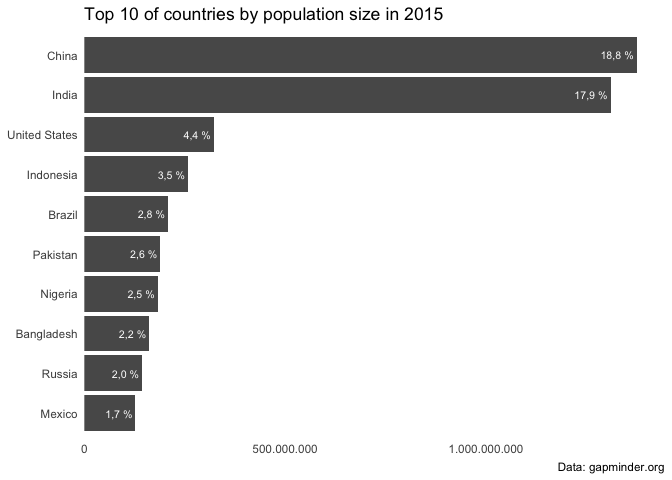

countryscales extends the scales package to make it easy to display numbers according to country-specific style conventions. Additionally countryscales extends ggplot2 by providing a set of positional scale functions to make it easy to style axes displaying numbers, percentages or currencies.
Installation
You can install the development version of countryscales like so:
remotes::install_github("trekonom/countryscales")The problem
Let’s say you have to prepare a report or charts where you have to
- use country specific style conventions to display numbers which differ from the default anglo-american style,
- display numbers on charts, axes or legends in decimal format, as percentages or as currencies.
To achieve that the scales package provides a family of easy to use functions like scales::label_number or scales::percent which could also be passed to the labels argument of ggplot2s family of scale functions.
However, in practice formatting numbers and styling axes quickly becomes cumbersome and annoying as you always have to
-
set the decimal and grouping marks if deviating from the defaults so you end up with something like
scales::label_number(big.mark = ".", decimal.mark = ",")(x)to format a number
xin decimal format. -
provide a suitable labeller function to the
labelsargument ofscale_xxx_yyy(and of course additionally switch the … (; ) so you end up with something likescale_x_continuous(labels = scales::label_percent(big.mark = ".", decimal.mark = ","))to display numbers on the x axis as percentages.
The solution
A first and simple solution to this problem would be to add some simple wrappers at the beginning of your R script or R markdown document like
my_label_number <- function() {
scales::label_number(big.mark = ".", decimal.mark = ",")
}But then you end up copy and pasting from one report to the next, so sooner or later you probably put these helpers inside package.
And that’s the goal of countryscales: Providing out-of-the-box helpers to format numbers using country-specific style conventions.
As a first example consider formatting a number according to style conventions used in Germany and several other European countries where a dot (.) is used as the big mark or grouping mark or thousands seperator and a comma (,) as the decimal mark.
Using scales::label_number this requires to switch the default decimal and big marks:
library(scales)
label_number(big.mark = ".", decimal.mark = ",", accuracy = .1)(x)
#> [1] "12.345.690,0"Using countryscales this could be achieved with less typing using countryscales::label_number_de:
library(countryscales)
label_number_de(accuracy = .1)(x)
#> [1] "12.345.690,0"To provide an example of using countryscales with ggplot2 let’s first prepare a small example dataset of the top 10 countries according to population size:
top10_pop <- gapminder15[order(-gapminder15$pop), c("country", "pop")]
top10_pop$pct <- top10_pop$pop / sum(top10_pop$pop)
top10_pop <- head(top10_pop, 10)As a basic example let’s make a simple barchart of population size by country
library(ggplot2)
p <- ggplot(top10_pop, aes(pop, reorder(country, pop))) +
geom_col() +
theme_minimal() +
theme(panel.grid.major = element_blank(),
panel.grid.minor = element_blank()) +
labs(
x = NULL, y = NULL,
title = "Top 10 of countries by population size in 2015",
caption = "Data: gapminder.org"
)While this chart is fine it’s not ready for publication. Let’s say we want to display population sizes on the x axis in decimal format and additionally add the share of each country on World population formatted as percentages as labels to the bars using German style conventions.
Using scales this could be achieved like so:
p +
# Add percentages to bars using German style conventions
geom_text(
aes(
label = label_percent(big.mark = ".",
decimal.mark = ",",
accuracy = .1)(pct)),
hjust = 1.1, size = 8 / .pt, color = "white") +
# Format numbers as percentages
scale_x_continuous(
labels = label_number(big.mark = ".",
decimal.mark = ","),
expand = c(0, 0, .05, 0))As this simple example shows displaying numbers in decimal format or as pwercentages requires some typing, especially if you want to or have to deviate from default decimal and grouping marks.
That’s where countryscales comes in handy as using label_percent_de and scale_x_number_de the same could be achieved with less typing like so:
p +
# Add percentages to bars using German style conventions
geom_text(
aes(
label = label_percent_de(accuracy = .1)(pct)),
hjust = 1.1, size = 8 / .pt, color = "white") +
# Format numbers as percentages
scale_x_number_de(expand = c(0, 0, .05, 0))